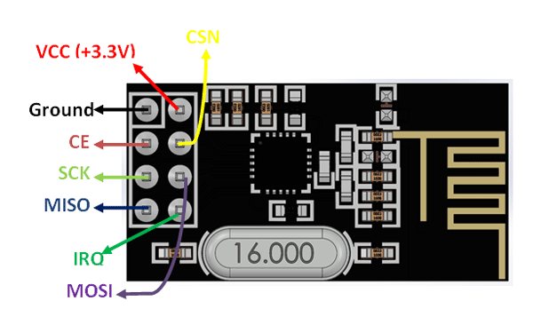

|
nrf24l01
Driver for the nRF24L01(+) transceiver
|
The NRF24L01 is a low-cost single chip 2.4GHz transceiver
Key features (as outlined by the datasheet) are
| Pin Number | Pin Name | Full Name | Function |
|---|---|---|---|
| 1 | GND | Ground | Module ground (digital) |
| 2 | VCC | Power | 3.3v module power rail |
| 3 | CE | Chip Enable | Active high, places module in RX or TX operating mode from Standby-I |
| 4 | CSN | Chip Select Not | Selects the NRF24L01 on the SPI bus if multiple devices are present, active low |
| 5 | SCK | Serial Clock | SPI bus clock (max 8MHz) |
| 6 | MOSI | Master Out Slave In | Port through which data is clocked into the module |
| 7 | MISO | Master In Slave Out | Port through which data is clocked out of the module |
| 8 | IRQ | Interrupt | Active low, fires when MCU assistance is needed |
Detailed information on the SPI interface can be found here

User options are exposed through macro definitions provided in the user supplied "nrf24l01_config.h" file in the parent directory
Macro options
NRF24L01_ENABLE_DEBUG_LOGGING can be defined to enable driver debug loggingNRF24L01_DEBUGGING_LOG must be defined if debug logging is enabled to provide platform specific method for timestamped, tagged, message logging Ex: define NRF24L01_DEBUGGING_LOG( ... ) log(VA_ARGS)NRF24L01_DEBUGGING_PRINTF #define NRF24L01_DEBUGGING_PRINTF( ... ) printf(__VA_ARGS__)NRF24L01_FPTR_RTN_T used to specify the return type for the platform specific SPI functions If this option is not provided, a signed 8-bit integer type is assumedNRF24L01_EXTERNAL_CLOCK should be defined if the NRF24L01 is using an external clock source to optimize timing